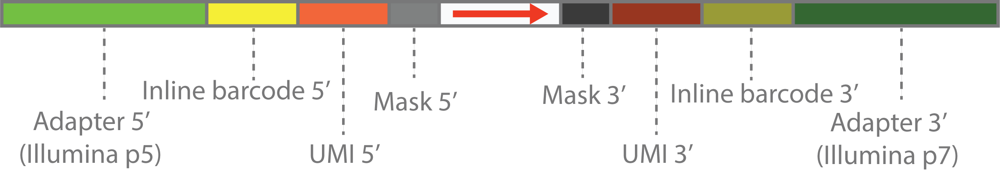

Quick Start
Installation
pip install cutseqBasic Usage
Trim adapters using a built-in scheme:
cutseq -A TAKARAV3 test_R1.fq.gz test_R2.fq.gzOr specify a custom adapter scheme in the grammar format:
cutseq -A "ACACGACGCTCTTCCGATCTXXX-XXXXXXNNNNNNNNAGATCGGAAGAGCACACGTC" test_R1.fq.gz test_R2.fq.gz
The scheme string describes the structure of your library. It is a top-strand molecular map: write the library as one DNA strand, 5' to 3', with no spaces:
- The part left of
+-:is read by Read 1 as-is (R1 sees the top strand 5' -> 3'). - The part right of
+-:is the molecule's 3' continuation (top strand, 5' -> 3'); Read 2 sequences the bottom strand, so it is matched as the reverse complement of that part (e.g. a right-handAGATCGGAAGAGCACACGTCis matched on Read 2 asGACGTGTGCTCTTCCGATCT). - Uppercase
ACGT...(between the two lowercase edges): the read-internal insert region — a fixed uppercase run directly adjacent to a lowercase edge is an inline barcode (matched & captured), any other fixed uppercase run is an adapter (matched & trimmed). - Lowercase
acgt...: a read-external sequencing primer / flowcell / outer edge — it is NOT part of the read, so the read starts after it (the run is skipped, never matched, captured or trimmed). NNNNN/N8: UMI sequences (captured into the read name)XXXXXX/X8: masked sequences (trimmed, not captured)- Case may not be mixed inside one feature: lowercase and uppercase blocks must be cleanly separated (
lower|upper|lower); a run that flips case more than once (e.g.ACtaGT) is rejected. +-:in the middle: library strand semantics (+ sense, - antisense, : unstranded). They do not change what is trimmed — adapter trimming is orientation-agnostic — and are only consulted by--auto-rc(single-end).
Numeric shorthand (N8, X6) is equivalent to the expanded run form (NNNNNNNN, XXXXXX).
Customizing read names
Captured UMIs/barcodes are appended to the read name by default (legacy naming, e.g. @READID_CTATTAAAAA). Customize with --rename (--name-format is an alias). It supports cutadapt's brace variables plus positional captures: {1}, {2}, ... reference the individual UMIs / inline barcodes in scheme order, with transform functions (rc({1}), upper(RC({2})), canon({1}), left({2},6), slice({1},1,4), ...).
# Label each captured part
cutseq -A INLINE --rename '{id}_BC1:{1}_BC2:{2}_umi:rc({3})' test_R1.fq.gz test_R2.fq.gz
# Same effect as the old --capture-separator ':' (insert ':' between captures)
cutseq -A INLINE --rename '{id}:{1}:{2}' test_R1.fq.gz test_R2.fq.gzSee the full Read Name Renaming reference for the complete function list and paired-end ({r1.1} / {r2.1}) behavior.
Defaults reproduce legacy output byte-for-byte.
Inline-barcode detection (lowercase edges)
Within the read-internal insert region (between the two lowercase read-external edges), a fixed uppercase run directly adjacent to a lowercase edge is an inline barcode (matched & captured); any other fixed uppercase run is an ordinary adapter (matched & trimmed). This is a structural grammar rule — it no longer relies on a primer database.
The built-in Illumina / BGI primer list (cutseq --list-primers) is kept as a knowledge base / diagnostic only: it is never used to change trimming or matching. When a lowercase run matches a known primer, CutSeq logs “looks like known sequencing primer …”; otherwise it logs “is not in the known primer list; confirm it is a sequencing primer / external region”.
# List the known sequencing primers (diagnostic only; never changes trimming or matching)
cutseq --list-primersScheme grammar example
Lowercase outer primers with an insert region embedded in one scheme (single-end):
# gacgt… lowercase = read-external read-1 / read-2 sequencing primers, skipped (read starts after them).
# N11 = 11-nt UMI (captured & kept; fixed width, padded with N if short) · X5 = 5-nt mask (trimmed)
# + = insert marker between the two arms · XX = the R2-side 2-nt mask · agatcg… = read-2 primer.
# Single-end starts after the left lowercase primer and extracts the 11-nt UMI (no primer flag).
cutseq -A 'gacgtgtgctcttccgatctNNNNNNNNNNNXXXXX+XXagatcggaagagcgtcgtgt' \
-R '{id}_umi:{1}' R1.fq.gzDiscarding reads with a reason tag
A single discard output captures all reads that fail QC, with the reason in the read name:
cutseq -A SMALLRNA -d discard_R1.fq.gz discard_R2.fq.gz \
--min-length 20 --max-n 5 --min-avg-quality 20 \
test_R1.fq.gz test_R2.fq.gzDiscarded reads carry a reason=... tag:
reason=too_short— shorter than--min-lengthafter trimmingreason=too_many_n— exceeds--max-nreason=low_quality— mean Phred quality below--min-avg-qualityreason=no_barcode— missing an expected inline barcode (only with--ensure-inline-barcode)
--ensure-inline-barcode requires the scheme to declare inline barcodes. When no -d/-O is given, discard files are auto-named from the input files.
How it works
A scheme is compiled once into a lazy graph of native cutadapt modifiers and executed in a single pass. The token-kind registry and phase order are data-driven, so the engine is easy to extend with new scheme elements. Read boundaries come from the scheme's lowercase runs (a lowercase ACGT run is read-external, so the read starts after it). See the documentation for details.